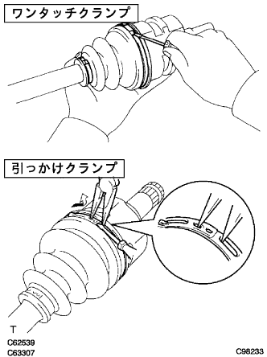
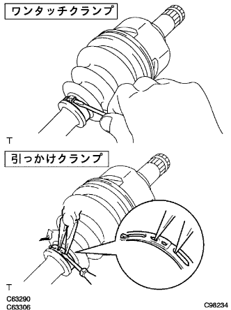
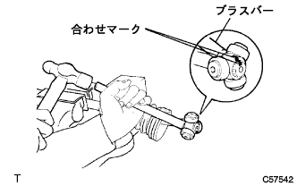
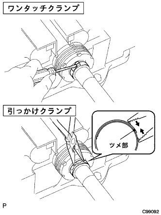
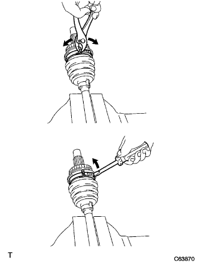
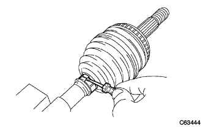
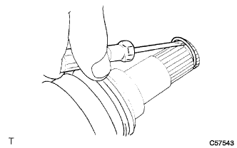
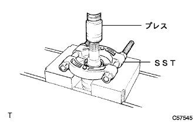

Front drive shaft decomposition |
| 1. Front axle inn Boots Joint Boots Clamp LH No.2 |
For one -touch clamps
|  |
Use a minus thin blade driver to solve the bellows and separate the Innboord Joint Boots Clamp No.2.
In the case of a hook clamp
Use the needle nose pliers and minus thin blade drivers, remove the hooking part, and separate the Innboord Joint Boots Clamp No.2.
| 2. Front Axle Inn Boots Joint Boots Clamp RH No.2 |
| 3. Front axle innboard joint boots clamp LH removed |
For one -touch clamps
|  |
Use a minus thin blade driver to solve the bellows and separate the inboord joint boot clamp.
In the case of a hook clamp
Use a needle nose pliers and minus thin blade drivers, remove the hook, and separate the Inn Board Joint Boots Clamp.
| 4. Front axle innboard joint boots Clamp RH |
| 5. Front axle in -board jeinery boots separate |
Separate the inboord joint boots from the inboord joint.
| 6. Remove the front drive innboard joint ASSY LH |
Grease is removed from the inboord joint.
 |
Mark to match the Inn Board Joint ASSY and the outboard joint shaft asser.
Remove the Inn Board Joint ASSY from the outboard joint shaft ASSY.
Sub -board joint shaft ASSY is fixed with a vise via an aluminum plate.
 |
Use the SST to remove the shaft slunatling INN.
|  |
Mark to match the tripord joint Assie and the outboard joint shaft asser.
Use a brass bar and a hammer to remove the Tripode Joint ASSY.
Remove the Inn Board Joint Boots Clamp No.2, Inn Board Joint Boots and Inn Board Joint Boots Clamp.
| 7. Remove the front drive innboard joint ASSY RH |
| 8. Remove the drive shaft Dampa clamp |
|  |
For one -touch clamps
Use a negative thin blade driver to solve the damp clamp and remove the clamp.
In the case of a hook clamp
Use a needle nose plier to remove the claws and remove the Danpa Clamp.
| 9. Remove the front drive shaft Dampa RH |
Remove the drive shaft Dampa from the outboard joint shaft ASSY.
| 10. Front Axle Outboard Joint Boots Clamp LH No.2 |
For one -touch clamps
 |
Use a negative thin blade driver to remove the outboard joint boots clamp No.2.
|  |
In the case of Omega Clamp
Use the pliers to grasp the clamps and the outboard joint boots clamp No.2 as shown in the figure.
Use a flathead screwdriver to remove the outboard joint boot clamp No.2.
| 11. Front Axle Outboard Joint Boots Clamp RH No.2 |
| 12. Front Axle Outboard Joint Boots Clamp LH |
For one -touch clamps
|  |
Use a negative thin blade driver to remove the outboard joint boot clamp.
In the case of Omega Clamp
| 13. Front Axle Outboard Joint Boots Clamp RH removed |
| 14. The front axle out board dust boots are removed |
Remove the outboard joint boots from the outboard joint shaft.
Grease is removed from the outboard joint.
| 15. Front drive Inn Board Joint Hall Snap Ring LH removed |
|  |
Use a minus thin blade driver to remove the hole slap ring.
Use the pliers to grasp the clamps and the outboard joint boots clamp No.2 as shown in the figure.
Use a flathead screwdriver to remove the outboard joint boot clamp No.2.
| 16. Front drive Inn Board Joint Hall Snap RH RH removed |
| 17. Front drive shaft dust cover LH removed |
|  |
Use SST and press to remove the dust cover.
| 18. Front drive shaft dust cover RH is removed |